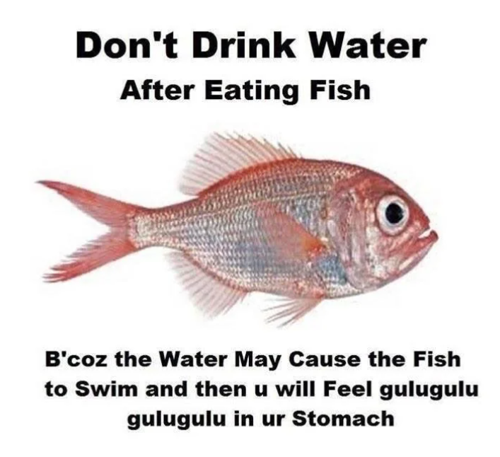

<h2 class="go-home">
    Esta página bebeu água depois de comer peixe e fez <a href="/">glub glub</a>!
</h2>


<!-- Adding the glitch effect -->
<script> document.getElementsByTagName('body')[0].classList.add('glitch'); </script>